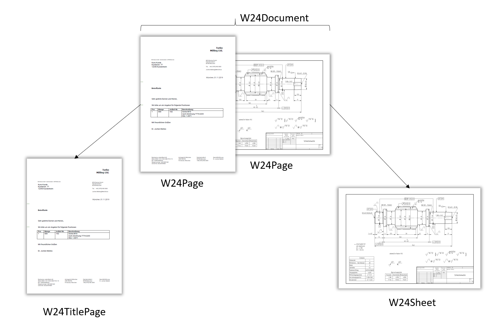

Asks¶
Asks are your way to tell the Werk24 Techread API what information you would like to learn about the Technical Drawing. We have decided to use this format, as it allows you to specify exactly what you would like to learn about the drawing, and can serve your customer as soon as possible. Time is of the essence!
The intend of this page is to give you a brief overview over the available Ask Types. Please refer to the API reference for a full description.
W24AskSheetThumbnail
"):::ask W24Plane -.n:m.-> W24Variant W24VariantTable -.1:m.-> W24Variant W24Variant --> VariantAsks(" W24AskVariantExportSTL
W24AskVariantFinestTolerance
W24AskVariantOverallDimensions
"):::ask W24Plane --> PlaneAsks(" W24AskPlaneThumbnail "):::ask classDef ask fill:#cad;
W24Document & W24Page¶
As the image below illustrates, a W24Document constist of one more multiple W24Pages. You can think of it as the pages in the PDF document that you submitted. If you sent us an image, the W24Document will have exactly one page: your image. Our algorithm automatically assesses the contents of each page and classifies it either as W24TitlePage or W24Sheet.

W24AskPageThumbnail¶
The W24AskPageThumbnail will return a thumbnail for each page in the document. The orientation of the thumbnail will follow the orientation of the page in the PDF document. You will receive one AskResponse per W24Page.
The Websocket will respond with something along the lines of:
{
"message_type": "ASK_PAGE_THUMBNAIL",
"payload_dict": {
"document_id": "44200f9b-1bb6-48bc-9370-de8a28e8dbbb",
"page_id": "89f54424-343e-4fd5-8b7d-e09ea5f310fd",
"page_number": 1
},
"payload_url": "https://..."
}
W24TitlePage¶
Every W24Page that is not classified as Sheet is automatically classified as W24TitlePage.
Important
If you want to use more information from the title pages, please get in touch with us. Internally we extract the position groups (i.e., the position, description, quantity) from the title pages. We also interpret the description to extract such information as "Drawing Id", "Material" etc. If you have a good business case for it, we'll be able to make this available to you.
W24Sheet¶
If a W24Page contains a Technical Drawing, it will be classified as W24Sheet.
W24AskSheetExportOnshape (Experimental)¶
The W24AskSheetExport will export all details (as far as they are understood and implemented) to Onshape, your online CAD Software. Beware that this feature is still experimental, and that the data you export to onshape is currently publically available! You'll need to create your own account with Onshape to enjoy privacy.
The Websocket will respond with something along the lines of:
{
"message_type": "ASK_SHEET_EXPORT_ONSHAPE",
"payload_dict": {
"document_id": "44200f9b-1bb6-48bc-9370-de8a28e8dbbb",
"page_id": "89f54424-343e-4fd5-8b7d-e09ea5f310fd",
"sheet_id": "5bc164d4-df0d-4482-9048-3a84de010abf",
"onshape_url":"https://onshape.com/.."
}
}
Note
Beware that the onshape_url will not be stored in the payload_url, but is an attribute to the payload_dict.
W24AskSheetThumbnail¶
The W24AskSheetThumbnail will return a thumbnail for each sheet in the document. The thumbnail will be rotated automatically.
The Websocket will respond with something along the lines of:
{
"message_type": "ASK_SHEET_THUMBNAIL",
"payload_dict": {
"document_id": "44200f9b-1bb6-48bc-9370-de8a28e8dbbb",
"page_id": "89f54424-343e-4fd5-8b7d-e09ea5f310fd",
"sheet_id": "5bc164d4-df0d-4482-9048-3a84de010abf",
},
"payload_url": "https://..."
}
W24VariantTable¶
To make life more interesting, some Technical Drawings contain a seperate specification table that typically looks something like this:
| length | width | |
|---|---|---|
| Type A | 10 | 10 +- 0.1 |
| Type B | 10 | 12 +- 0.2 |
A Sheet that contains such a specification table consequently describes multiple W24Variants; in this case the parts "Type A" and "Type B".
W24Plane¶
W24AskPlaneThumbnail¶
The W24AskPlaneThumbnail will return a thumbnail for each plane on the sheet. This also includes detail drawings. The thumbnail will be rotated automatically.
{
"message_type": "ASK_PLANE_THUMBNAIL",
"payload_dict": {
"document_id": "44200f9b-1bb6-48bc-9370-de8a28e8dbbb",
"page_id": "89f54424-343e-4fd5-8b7d-e09ea5f310fd",
"sheet_id": "5bc164d4-df0d-4482-9048-3a84de010abf",
"plane_id": "eca7c9f8-6dc2-11ea-bc55-0242ac130003",
},
"payload_url": "https://..."
}
W24Variant¶
Each sheet may describe one or more Variants, depending on the precense of a W24VariantTable. You can think of it as a "fanzy" description of a Part. In most cases a Technical Drawing will only describe one Variant (i.e., one Part), but we see W24VariantTables in about 2-5% of the files. So be sure to implement the handling of multiple variants.
W24AskVariantExportSTL (Experimental)¶
The W24AskVariantExport will return an STL file for each variant that was found on the Sheet.
{
"message_type": "ASK_VARIANT_EXPORT_STL",
"payload_dict": {
"document_id": "44200f9b-1bb6-48bc-9370-de8a28e8dbbb",
"page_id": "89f54424-343e-4fd5-8b7d-e09ea5f310fd",
"sheet_id": "5bc164d4-df0d-4482-9048-3a84de010abf",
"variant_id": "132ea0e2-6dc3-11ea-bc55-0242ac130003",
},
"payload_url": "https://..."
}
W24AskVariantFinestTolerance¶
W24AskVariantFinestTolerance will return the minimal measure tolerances that were found among all measures in the Variant. Here the finest tolerance is understood as the tolerance whose difference between the upper and lower bound is the smallest. Depending on your Drawing, the signs might be +/+, +/- or -/-.
{
"message_type": "ASK_VARIANT_FINEST_TOLERANCE",
"payload_dict": {
"document_id": "44200f9b-1bb6-48bc-9370-de8a28e8dbbb",
"page_id": "89f54424-343e-4fd5-8b7d-e09ea5f310fd",
"sheet_id": "5bc164d4-df0d-4482-9048-3a84de010abf",
"variant_id": "132ea0e2-6dc3-11ea-bc55-0242ac130003",
"variant_finest_tolerance": {
"upper_tolerance": 0.1,
"lower_tolerance": -0.05
}
}
}
Note
As the tolerances could potentially be specified in the W24VariantTable, you will need to be sure to pick the correct variant.
W24AskVariantOverallDimensions¶
The W24AskVariantOverallDimensions will return the overall dimensions for each variant that is found. It will return a W24OverallDimensions object, that contains measures for x, y, z as well as an enum indicating the shape.
{
"message_type": "ASK_VARIANT_EXPORT_STL",
"payload_dict": {
"document_id": "44200f9b-1bb6-48bc-9370-de8a28e8dbbb",
"page_id": "89f54424-343e-4fd5-8b7d-e09ea5f310fd",
"sheet_id": "5bc164d4-df0d-4482-9048-3a84de010abf",
"variant_id": "132ea0e2-6dc3-11ea-bc55-0242ac130003",
"variant_overall_dimensions": {
"x_dimension": {
"value": 5,
"tolerance_upper": 0.5,
"tolerance_lower": null
},
"y_dimension": {
"value": 5,
"tolerance_upper": 0.5,
"tolerance_lower": null
},
"z_dimension": {
"value": 15,
"tolerance_upper": 0.5,
"tolerance_lower": 0.1
},
"shape":"ROD_ROUND"
}
}
}